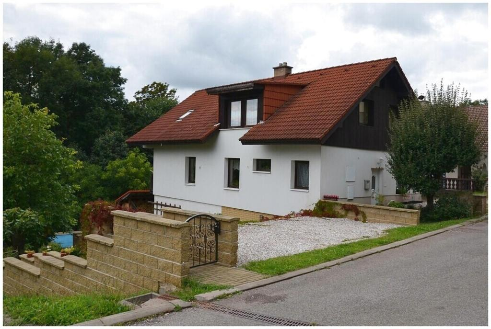
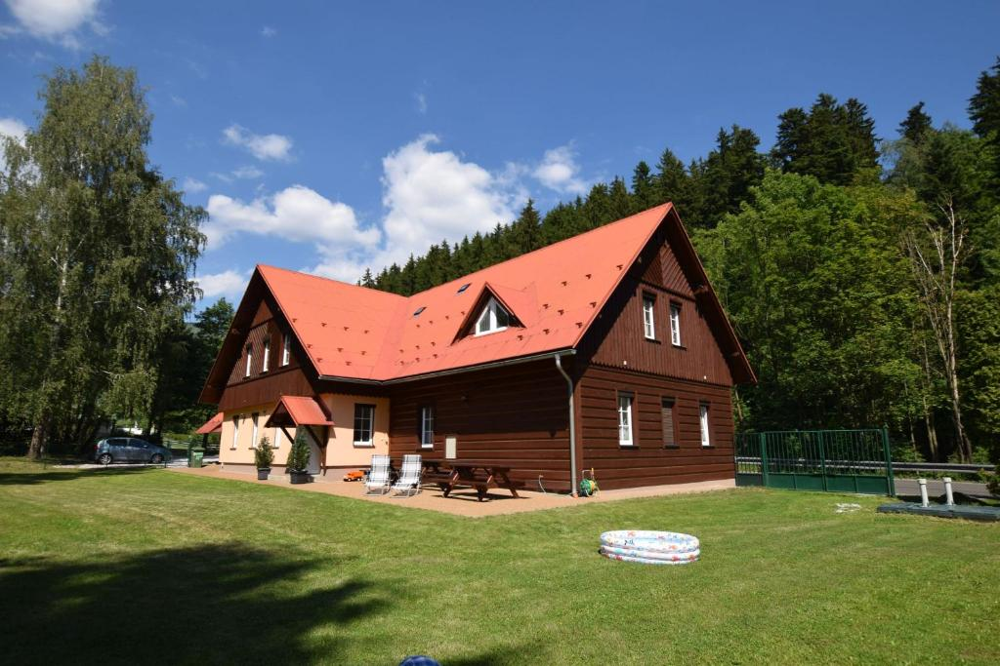
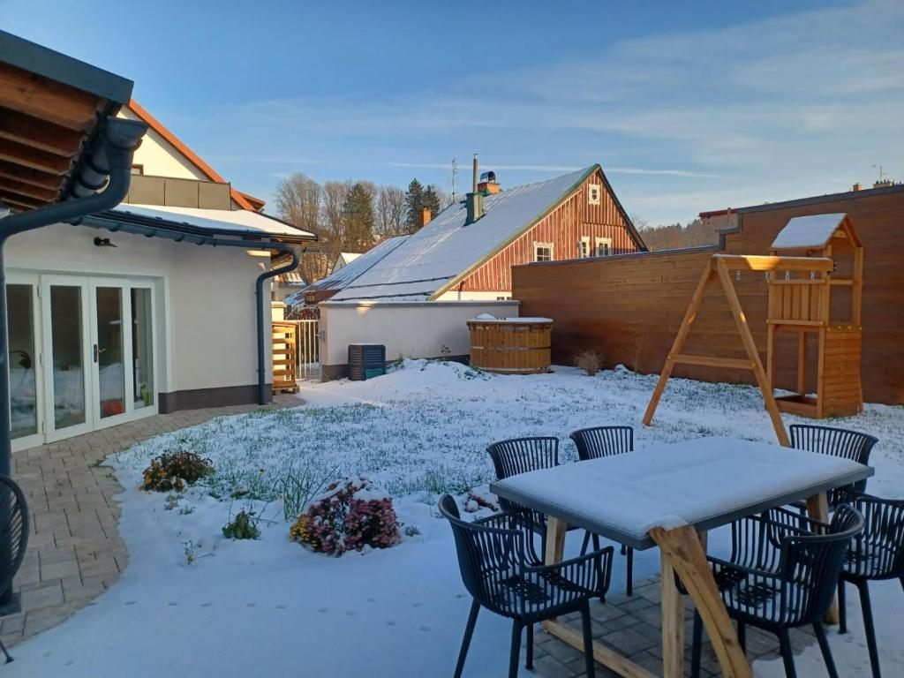
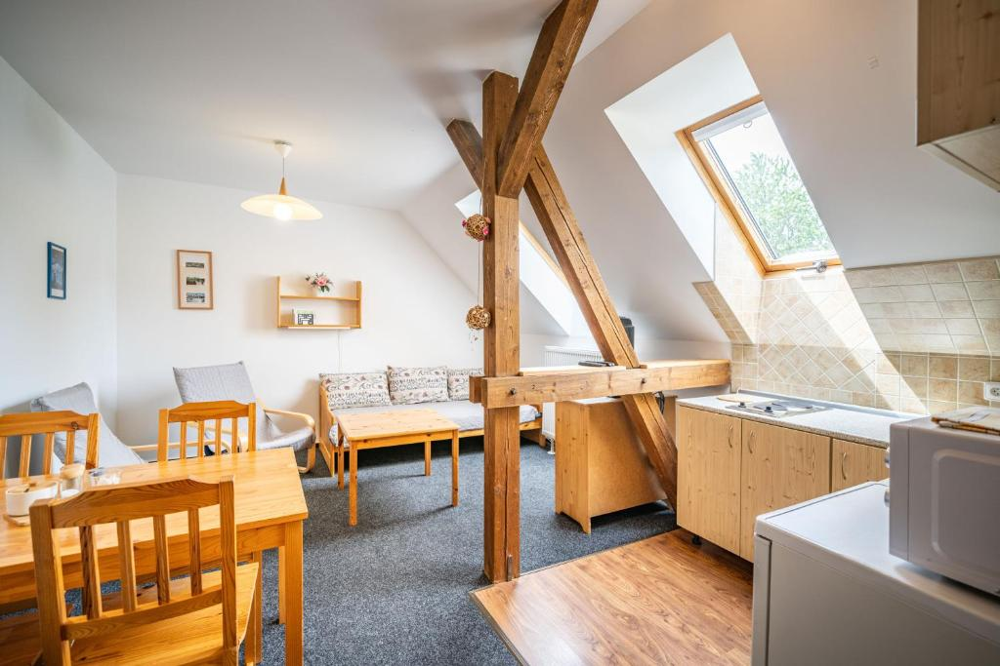
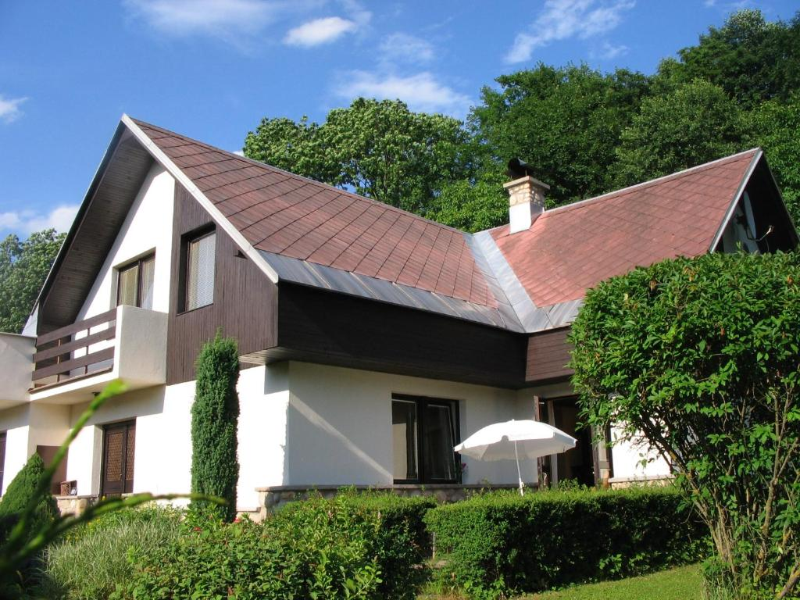
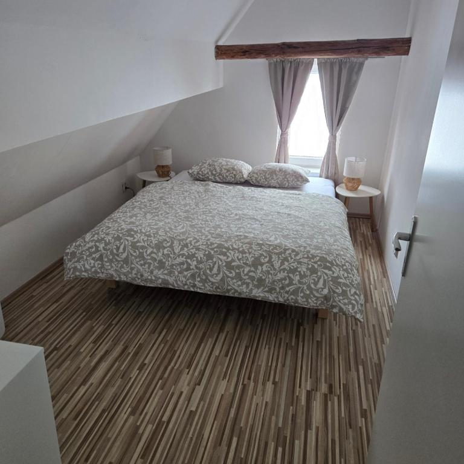
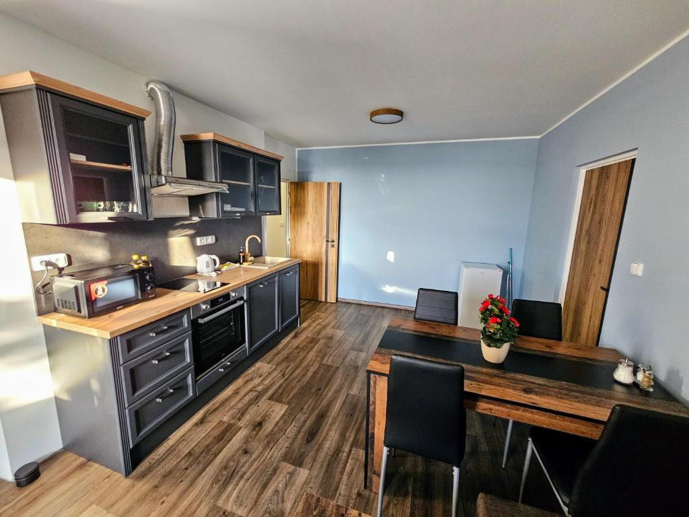
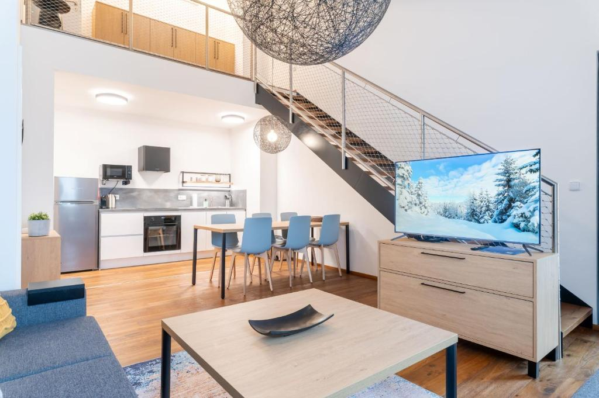
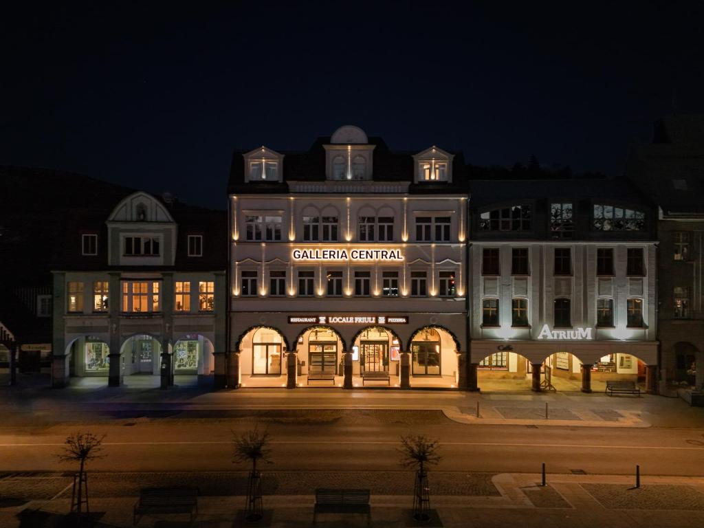
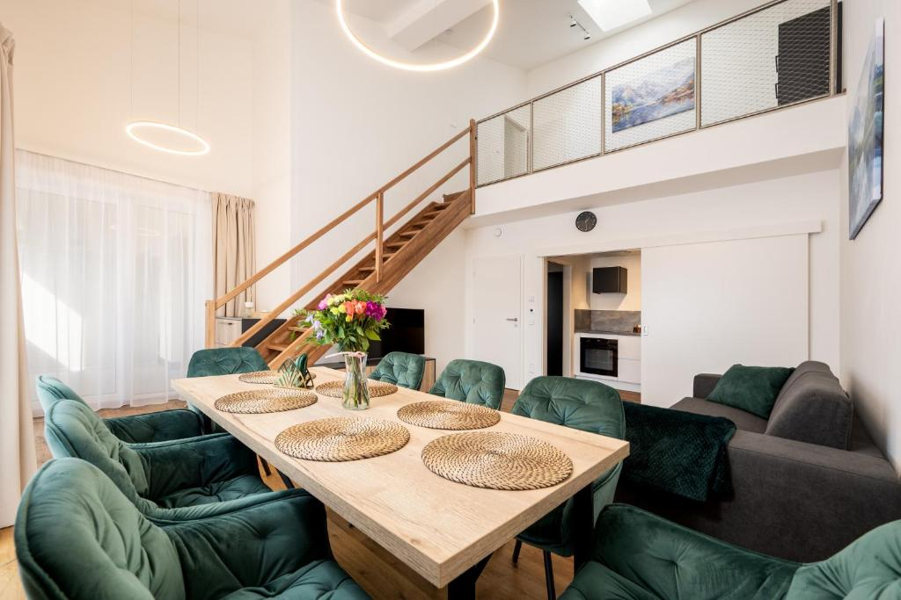

Drive from Wrocław, check in and organise equipment. An introductory lesson only if arrival time allows.
CZECHIA · GIANT MOUNTAINS · WINTER
Černý Důl.
A long weekend.
Time for the first turns.
4 days / 3 nightsSat–Tue · 13–16 February
5 travellersLikely 4 skiing, 1 not skiing
From WrocławOne car · route to choose
Learning firstTwo nieces starting out
01 / WINTER IN CZECHIA
Small steps. A shared winter escape.
A four-day trip focused on helping two nieces learn to ski, with time to explore gentle runs when they are ready. Černý Důl is the base under consideration; no accommodation or lessons have been booked.
Tentative dates: Saturday 13 to Tuesday 16 February 2027 — four calendar days and three nights (13, 14 and 15 February). Bookings are not confirmed. Three ski days remain a budgeting assumption; the final skiing schedule is still open.
02 / WINTER IN CZECHIA
Four days, with room to learn.
Main learning day. Book a suitable shared lesson for the nieces; keep breaks flexible.
Practise and build confidence. Move beyond the teaching area only when the instructor considers it appropriate.
Check out and return home. Morning skiing is an option, not a fixed plan; agree equipment return and luggage storage.
The order of lessons is still open. The earlier budget assumed three ski days, which requires some skiing on an arrival or departure day. Two full days are currently the firmest part of the outline.
03 / WINTER IN CZECHIA
A gentle start in the Giant Mountains.
LIVE park
Start in the teaching area near Family Express. The official resort describes gentle, wide slopes, two chairlifts and an on-site school and rental.
Two learners, together
Working lesson model: four instructor hours shared by both nieces, such as two hours on each of two days. Confirm ages, ability, teaching language and whether shared tuition is suitable.
Simple runs, when ready
Keep the first progression in the same sector. No specific blue run or day of progression has been selected. Choose with the instructor and current piste status.
Exact ages are not known. The nieces were described as older, but adult ski-pass or lesson categories have not been established.
04 / ČERNÝ DŮL
The slopes we care about.
Panoramic map from Skimap.org. Shown in full, without cropping. Open the enlarged viewer to read the slope numbers, lift labels and facility symbols.
This is a historical map with an unspecified edition. Its trail numbering differs from the current resort. Use enlargement for small labels, and the official live map for current lifts, trails and opening status.
Start here
LIVE park · 130 m; Veronika · 170 m. Agree the suitable learning area and progression with the instructor.
Blue options
Holandská · 1,400 m; Bönischovy Boudy · 600 m. These names refer to the current resort; a blue rating alone does not guarantee suitability for a first lesson.
For more confident skiers
Špičák 2, U lomu 1 and U lomu 2 are for more confident skiers. Check current difficulty and opening status on the operator’s map.
Panorama source: Skimap.org.
05 / WINTER IN CZECHIA
One car, five travellers

Approx. 140–150 km · 2½–3 hours each way in winterIllustrative route via Lubawka and Trutnov, not a navigation trace. Breaks are extra: with a 15-minute stop, allow about 2¾–3¼ hours. Check the actual route and vignette requirements before departure.
Open in Google Maps ↗One car, five travellers
Wrocław → Lubawka → Trutnov → Černý Důl: approximately 140–150 km each way. Allow 2½–3 hours of driving in winter, or about 2¾–3¼ hours with a 15-minute stop. Distance and time depend on the departure address, traffic and road conditions. Fuel costs and any vignette still need to be confirmed.
Choose a driving route ↗Parking & daily logistics
The official resort page currently states that resort parking is free. Accommodation parking depends on the property. Happy Hill options need a short drive; distances from one house must not be assumed for every house.
Zieleniec + Černý Důl was discussed as an alternative, but is not part of this draft. There is no confirmed intermediate stop.
06 / WINTER IN CZECHIA
A shared living room. Space for five.
Ten properties · five per group · 13–16 February 2027 · three nights for five guests. All active offers were shown available on Agoda for five adults at the checks on 20 November 2026. Mid range now has a €1,000 ceiling for three nights; three expensive properties have been replaced. Nearby towns require a drive to Černý Důl.
✓ Free cancellation before the stated date · × No free cancellation · ? Terms unknown
Availability is not a reservation. All totals are for the whole party and calculated as three times the rounded displayed nightly rate. Approximate euros use €1 = 4.30 PLN as a planning assumption. Check the final total, separately payable fees, exact cancellation cutoff and penalties before booking. Ages are still provisional. Driving times are rough planning estimates, without stops or severe winter delays. Photos show the property gallery, not necessarily the exact selected unit.
Lower cost
≈€361–662 for three nights. Most have two bedrooms; separate living rooms are not confirmed at every property.

Svoboda nad Úpou · Sluneční Stráň 307
Pension Dvořáček
Shown available · 13–16 Feb · 5 adults
Two-Bedroom Apartment · 50 m²
2 bedrooms · 5 single beds · full kitchen and seating area. A separate living room is not confirmed.
≈€361 / 3 nights517 PLN/night · 1,551 PLN/3 nights for five guests.
CancellationBefore 30 January 2027
≈15–25 min by car
Price & booking details
Parking, Wi-Fi and displayed taxes/fees included. No credit card needed for this offer.

Čistá v Krkonoších 25
Apartments White - Hill · No. 9
Shown available · 13–16 Feb · 5 adults
Two-Bedroom Apartment No. 9 · 45 m²
45 m² · 2 bedrooms · queen bed + 3 single beds · full kitchen and dining area. A separate living room is not confirmed. Free parking.
≈€556 / 3 nights797 PLN/night · 2,391 PLN/3 nights for five guests.
CancellationNon-refundable
≈5–10 min by car
Price & booking details
797 PLN/night; calculated 2,391 PLN/3 nights for the apartment. Displayed as including taxes and fees. The gallery photo shows the property, not a guaranteed view of unit No. 9.

Vrchlabí · J. K. Tyla 1742
Apartmány Albipolis – Hořec a Modřín
Shown available · 13–16 Feb · 5 adults
Two-Bedroom Apartment · 70 m²
2 bedrooms + common sofa bed · 2 bathrooms · full kitchen. Five proper beds in the bedrooms.
≈€569 / 3 nights815 PLN/night · 2,445 PLN/3 nights for five guests.
CancellationBefore 12 February 2027
≈20–30 min by car
Price & booking details
Parking, Wi-Fi and displayed taxes included. No payment until 10 February. Confirm any separate local fees.

Vrchlabí · Pod Žalým 79
Apartmány Rubinovi
Shown available · 13–16 Feb · 5 adults
Two-Bedroom Apartment · 50 m²
2 bedrooms · 4 single beds + queen bed · full kitchen and seating area. A separate living room is not confirmed.
≈€618 / 3 nights886 PLN/night · 2,658 PLN/3 nights for five guests.
CancellationBefore 14 January 2027
≈25–35 min by car
Price & booking details
Parking, Wi-Fi and displayed taxes included. No payment until 12 January. Property announcements also mention bank-transfer prepayment; reconcile this before booking.

Horní Lánov 168
Vakantiehuis Reuzengebergte
Shown available · 13–16 Feb · 5 adults
Holiday Home – First Floor · 90 m²
2 bedrooms · full kitchen + dining area · first-floor unit, not the whole building. A separate living room is not confirmed.
≈€662 / 3 nights949 PLN/night · 2,847 PLN/3 nights for five guests.
CancellationBefore 14 January 2027
≈10–20 min by car
Price & booking details
Parking, Wi-Fi and displayed taxes/fees included. No credit card needed; property requests bank-transfer prepayment. Ask for the payment schedule.
Mid range
Five alternatives within €1,000 for three nights. Shown prices: approximately €544–823 for the whole party. Some new options are cheaper than the lower-cost group.

Hertvíkovice 82 · Mladé Buky
Apartmány Hertvinka
Shown available · 13–16 Feb · 5 adults
Two-Bedroom Apartment · 80 m²
2 bedrooms upstairs · living room with kitchen · 2 queen beds + single bed: all five guests can sleep in the bedrooms.
≈€544 / 3 nights780 PLN/night · 2,340 PLN/3 nights for five guests.
CancellationBefore 10 February 2027
≈15–25 min by car
Price & booking details
Offer 1: pay at the property. Parking, Wi-Fi and displayed taxes/fees included. Offer 2 was shown at the same price with payment not before 8 February. Cleaning, any separate local tax and deposit still need confirmation. Owner listing confirms the living room and two upstairs bedrooms.

Trutnov · Žižkova 457
Apartmán Trutnov – Žižkova
Shown available · 13–16 Feb · 5 adults
Two-Bedroom Apartment · 60 m²
2 bedrooms + common sofa bed for the fifth guest · full kitchen and dining area · fourth floor, lift listed.
≈€555 / 3 nights795 PLN/night · 2,385 PLN/3 nights for five guests.
CancellationBefore 6 February 2027
≈25–40 min by car · longer drive
Price & booking details
Offer 1: parking, Wi-Fi and displayed taxes/fees included. No payment until 4 February. Confirm any separate cleaning fee, local tax and refundable deposit. Longer daily drive than the options in Černý Důl and Lánov.

Vrchlabí · Horská 179
Apartmány Resort Vrchlabí
Shown available · 13–16 Feb · 5 adults
Two-Bedroom Apartment with Balcony · 73 m²
2 bedrooms + living area · double bed, bunk beds and sofa bed · full kitchen · balcony.
≈€674 / 3 nights966 PLN/night · 2,898 PLN/3 nights for five guests.
CancellationBefore 30 January 2027
≈20–30 min by car
Price & booking details
Parking, Wi-Fi and displayed taxes included. No payment until 28 January; property announcements also mention bank-transfer prepayment. Confirm separate charges and payment schedule.

Vrchlabí · Krkonošská 188
Galleria Central Apartments & Wellness
Shown available · 13–16 Feb · 5 adults
Standard Apartment · 45 m²
2 bedrooms + seating area · 2 queen beds + sofa bed for the fifth guest · full kitchen.
≈€767 / 3 nights1,100 PLN/night · 3,300 PLN/3 nights for five guests.
CancellationBefore 30 January 2027
≈20–30 min by car
Price & booking details
Wi-Fi and displayed taxes included. No payment until 28 January. Parking and wellness are not listed as included in this offer; availability and charges need checking.

Vrchlabí · Horská 179
Krkonošský šarm
Shown available · 13–16 Feb · 5 adults
Two-Bedroom Apartment with Balcony · 83 m²
2 bedrooms + living/seating area · 2 queen beds + sofa bed for the fifth guest · full kitchen · balcony.
≈€823 / 3 nights1,179 PLN/night · 3,537 PLN/3 nights for five guests.
CancellationBefore 8 February 2027
≈20–30 min by car
Price & booking details
Offer 1: parking, Wi-Fi and displayed taxes/fees included. No payment until 6 February. Confirm any separately payable local charges, cleaning and refundable deposit before booking.
Albipolis remains a lower-cost option with five beds in two bedrooms and free cancellation before 12 February. Among the new alternatives, compare Hertvinka for its two bedrooms and living room with kitchen, and Krkonošský šarm for its 83 m² apartment. Free cancellation applies only before the stated deadline and does not guarantee a date change at the same price. Nothing is booked.
Previous candidates · why they left the shortlist
Unknown availability is not the same as fully booked. These properties are not current verified offers.
| AVIATIK | Not available on Agoda for these dates; direct inventory is unknown. Direct terms mention free cancellation at least 14 days before arrival; this does not override another provider’s rate. |
|---|---|
| Chalupa U Mariky | Calendar occupied from 15 February; our three-night stay does not fit. Free cancellation not established. |
| Happy Hill 32 | Interhome calendar: unavailable 13–16 February, minimum stay seven nights. Cancellation terms for a suitable offer were not established. |
| Bonites · chata Krkonoše | Published winter reference requires five nights; no suitable three-night offer or cancellation policy verified. |
| Apartmány Pampeliška | Winter weekly minimum in one source; conflicting short-stay information. No exact-date offer or cancellation policy verified. |
| Pod Černou 5 | Exact-date availability and free cancellation remain unverified. |
| Chata Aperolka | Exact-date availability remains unverified. Published terms allow free cancellation at least 14 days before arrival; the 14-day boundary needs clarification. |
| Apartmán Alfa 11 | Exact-date availability is unverified. Published terms retain the 10% deposit for cancellation within 14 days; a full refund before that is not established. |
| Chalupa MausHaus | No verified three-night offer, exact-date availability or cancellation policy. |
| Vila v Krkonoších | ? Calendar gap only: a three-night winter stay, current price and free cancellation are unconfirmed. Replaced in the main ten by dated offers. |
| Angel Apartment Černý Důl | Excluded: above the €1,000 accommodation ceiling for three nights. Do not reintroduce at the old rate. |
| Endemit Apartment | Excluded: above the €1,000 accommodation ceiling for three nights. Do not reintroduce at the old rate. |
| Resort Aurum · Deluxe Suite | Excluded: above the €1,000 accommodation ceiling for three nights. Do not reintroduce at the old rate. |
07 / WINTER IN CZECHIA
A winter break beyond the pistes.
Ideas for the likely non-skier and time together. Winter hours, admission and transport have not yet been checked; these are possibilities rather than bookings.
Černý Důl
A village stroll and, if open, Muzeum Podzemí Krkonoš. Start with something close to the accommodation.
Janské Lázně
A spa-town walk, the Krkonoše treetop walkway or the aquacentre. Confirm winter opening and access before choosing the day.
Vrchlabí
A nearby-town outing and a possible indoor-pool alternative for poor weather. The detailed programme is still open.
The outdoor Happy Hill pool is seasonal: do not include it in the winter plan. Sněžka and Dvůr Králové Safari Park remain optional ideas requiring separate winter checks.
Food is undecided. Breakfast at home and simple meals out were an early budgeting model, not an agreed dining plan. Restaurace Pošta, Pizzerie Garden and Restaurace Čistá were mentioned but not selected.
08 / WINTER IN CZECHIA
A starting estimate, not a quote.
Historical estimate for five travellers, three nights and four people skiing for three days. Prices are for the whole group: euros first, Czech crowns in brackets. The original PLN estimates use the historical planning rates €1 = 4.3768 PLN and €1 = 25 Kč; figures are rounded independently. This is a currency conversion, not a new price check for 13–16 February.
| Accommodation · replace with chosen property | ≈€343–548 (8,568–13,709 Kč) |
| Ski passes · 4 × 3 days | ≈€503–685 (12,566–17,136 Kč) |
| Rental · assumed 4 full sets × 3 days | ≈€206–297 (5,141–7,426 Kč) |
| Instructor · 4 shared hours for two nieces | ≈€228–343 (5,712–8,568 Kč) |
| Food · 5 people × 4 days | ≈€274–388 (6,854–9,710 Kč) |
| Car, parking & fees · mixed reserve to split | ≈€103–194 (2,570–4,855 Kč) |
Sum of the earlier estimate≈€1,656–2,456 (41,412–61,403 Kč)
Not a current all-in price. Activities are unpriced, not free. Refundable deposits are separate cash requirements. Do not add a selected apartment cost on top of the accommodation allowance.
Choose the right ski pass first
Compare local Černý Důl and teaching-area tickets with a resort-wide pass after confirming ages and ski days. The handover mentioned a 2026/27 Flexiskipas at €50 (1,250 Kč) per adult/day: 4 × 3 days would be €600 (15,000 Kč). This historical reference is not a verified current offer or necessarily the cheapest option for beginners.
Operator prices & ticket shop ↗Equipment & lessons still to specify
The early rental estimate assumed skis, boots, poles and helmets for all four skiers. Actual own equipment is unknown. Four instructor hours are shared between the nieces, not four private hours each. Confirm teaching language, ages, shared tuition and any teaching-lift charge.
09 / WINTER IN CZECHIA
Before the first turn.
Checks are saved only in this browser.
10 / WINTER IN CZECHIA
Keep the useful things close.
Planning handover: 1 November 2026. Accommodation expanded and checked on 20 November 2026 for 13–16 February 2027: dated Agoda room offers for five adults, property galleries and previous public-calendar research. The ten active cards are available-offer snapshots; archived candidates are not bookable offers. Rates and inventory can change.